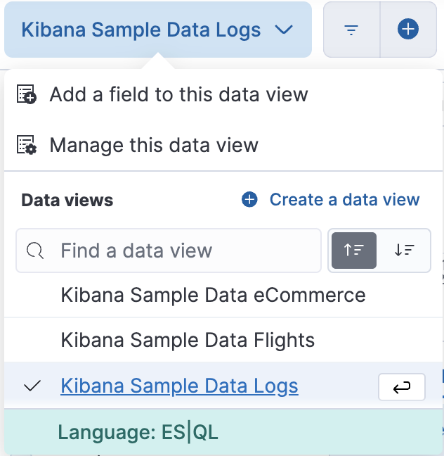
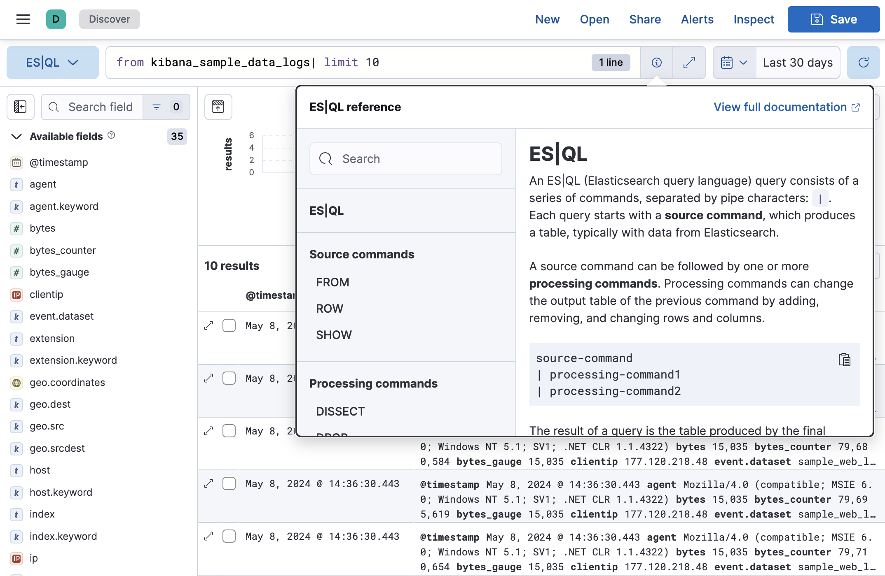

ES|QL
editThe Elasticsearch Query Language, ES|QL, makes it faster and easier to explore your data.
ES|QL is a piped language which allows you to chain together multiple commands to query your data. Based on the query, Lens suggestions in Discover create a visualization of the query results.
ES|QL comes with its own dedicated ES|QL Compute Engine for greater efficiency. With one query you can search, aggregate, calculate and perform data transformations without leaving Discover. Write your query directly in Discover or use the Dev Tools with the ES|QL API.
Here’s how to use ES|QL in the data view selector in Discover:

ES|QL also features in-app help, so you can get started faster and don’t have to leave the application to check syntax.

You can also use ES|QL queries to create panels on your dashboards, create enrich policies, and create alerting rules.
For more detailed information about ES|QL in Kibana, refer to Using ES|QL in Kibana.
ES|QL is enabled by default in Kibana. It can be
disabled using the enableESQL setting from the
Advanced Settings.
This will hide the ES|QL user interface from various applications. However, users will be able to access existing ES|QL artifacts like saved searches and visualizations.
Observability
editES|QL makes it much easier to analyze metrics, logs and traces from a single query. Find performance issues fast by defining fields on the fly, enriching data with lookups, and using simultaneous query processing. Combining ES|QL with machine learning and AiOps can improve detection accuracy and use aggregated value thresholds.
Security
editUse ES|QL to retrieve important information for investigation by using lookups. Enrich data and create new fields on the go to gain valuable insight for faster decision-making and actions. For example, perform a lookup on an IP address to identify its geographical location, its association with known malicious entities, or whether it belongs to a known cloud service provider all from one search bar. ES|QL ensures more accurate alerts by incorporating aggregated values in detection rules.
What’s next?
editThe main documentation for ES|QL lives in the Elasticsearch docs.
We also have a short tutorial in the Discover docs: Using ES|QL.